Navigation secondary
Behavior
Current page indicator
When a visitor is viewing a page that is part of the secondary navigation IA, a red bar will appear above the corresponding menu or link. External links will not display the top red bar (except on hover) because they direct visitors to a new tab or window when selected.
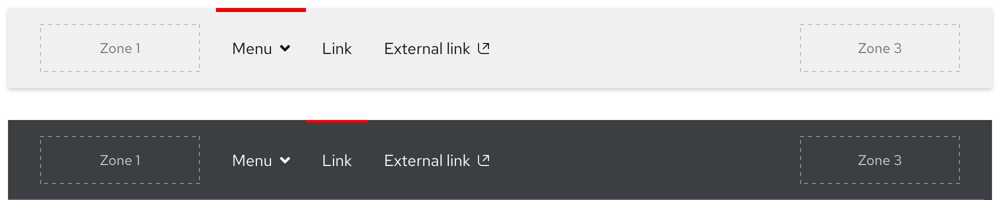
Scrolling with primary navigation
When the secondary navigation is used in conjunction with the primary navigation, it is positioned underneath. When a visitor scrolls down, the primary navigation will disappear and the secondary navigation will remain sticky.
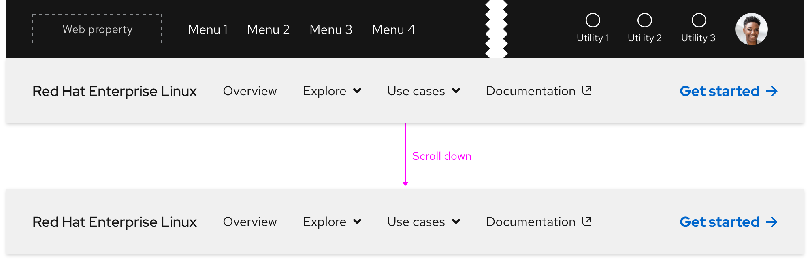
When a visitor scrolls to the top of the page, the secondary navigation will reset underneath the primary navigation.
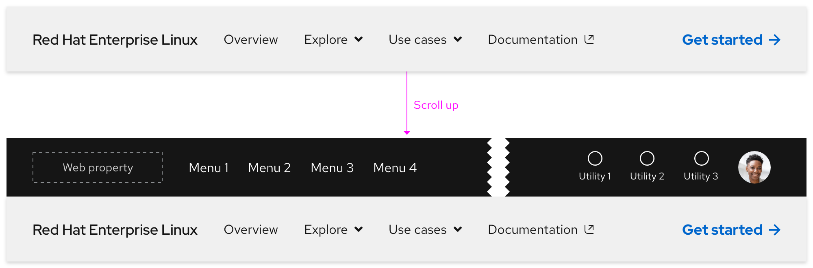
Scrolling with expandable tray
If the height of the expandable tray is shorter than the viewport, content will scroll underneath.
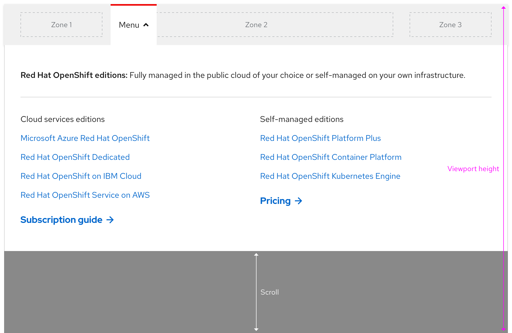
If the height of the expandable tray is taller than the viewport, the tray will scroll instead.
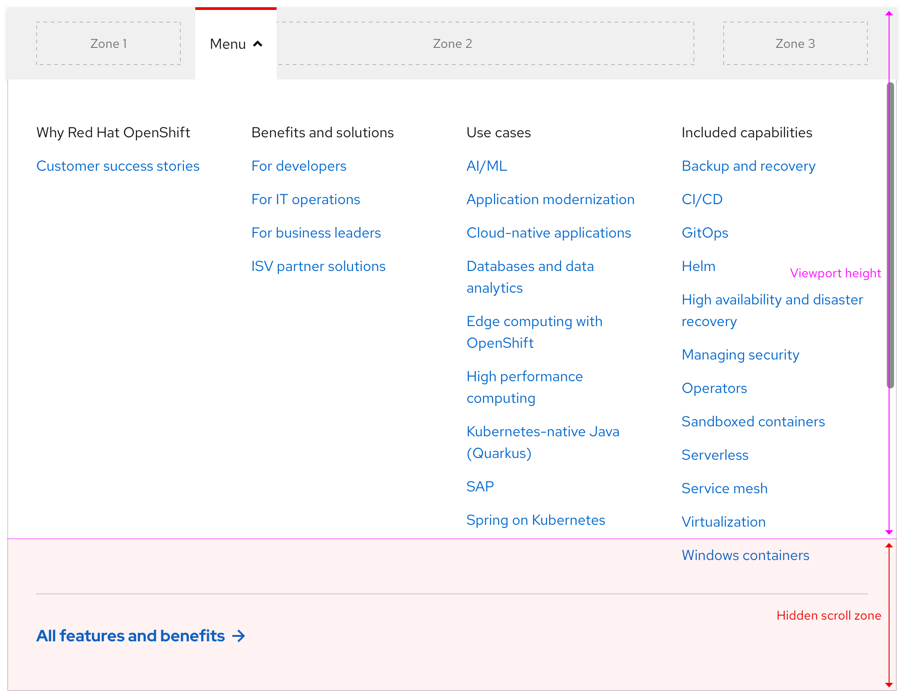
Navigating between expandable trays
Only one expandable tray can be expanded at a time and there is no animation when navigating from one tray to the next.
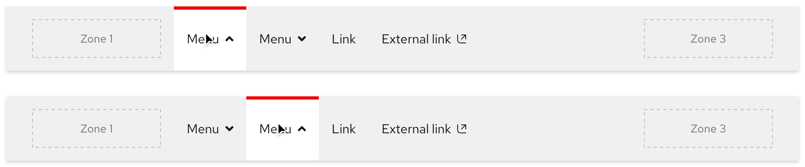
Collapsing the expandable tray
Clicking or tapping anywhere outside of the expandable tray should collapse it. Pressing the esc key should collapse the expandable tray as well.
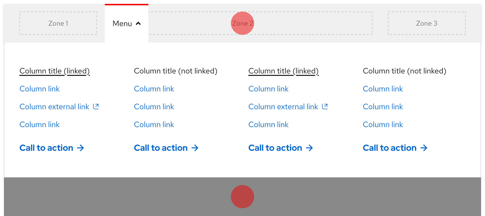
Additional behaviors
Keep in mind the following additional behaviors:
- The expandable tray should not collapse or expand without user input by mouse or keyboard
- Scrolling while the expandable tray is visible should not close the tray
Interaction states
Default
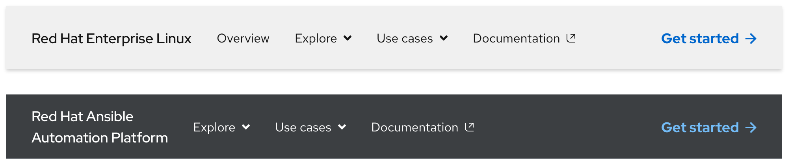
| State | Element | Styling |
|---|---|---|
| Default (light theme) | Product name text | RH Display, Medium / 18px, 27 (1.5) / #151515 |
| Default (light theme) | Menu/link text and icons | RH Text, Regular / 16px, 24 (1.5) / #151515 |
| Default (dark theme) | Product name text | RH Display, Medium / 18px, 27 (1.5) / #fff |
| Default (dark theme) | Menu/link text and icons | RH Text, Regular / 16px, 24 (1.5) / #fff |
| Default (all themes) | Call to action text | See the Call to action page for specs |
Hover
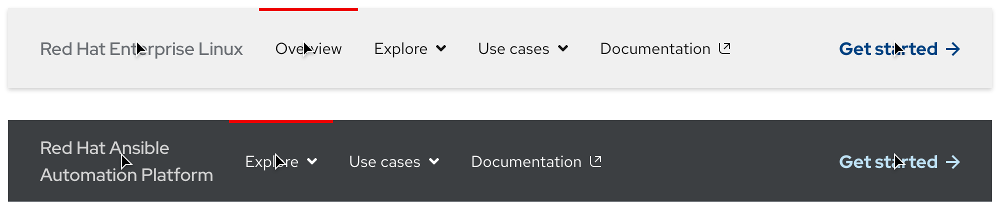
| State | Element | Styling |
|---|---|---|
| Hover (light theme) | Product name text | #6a6e73 |
| Hover (dark theme) | Product name text | #d2d2d2 |
| Hover (all themes) | Menu and link top bar | #e00 / 3px thickness |
| Hover (all themes) | Call to action text | See the Call to action page for specs |
Focus
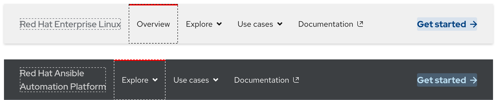
Helpful tip
The focus state carries over styles from the hover state and also adds a focus indicator.
| State | Element | Styling |
|---|---|---|
| Focus (light theme) | Zone 1 | #6a6e73, dashed, 1px border width |
| Focus (light theme) | Zone 2 | #151515, dashed, 1px border width |
| Focus (dark theme) | Zone 1 | #d2d2d2, dashed, 1px border width |
| Focus (dark theme) | Zone 2 | #151515, dashed, 1px border width |
| Focus (all themes) | Zone 3 (call to action) | See the Call to action page for specs |
Active
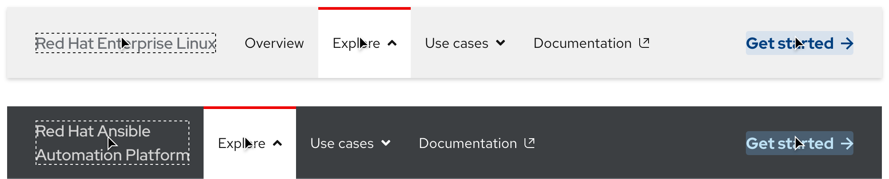
| State | Element | Styling |
|---|---|---|
| Active (all themes) | Tab top bar | #e00 / 3px thickness |
| Active (all themes) | Tab background | #fff |
| Active (all themes) | Menu text and icon | RH Text, Regular / 16px, 24 (1.5) / #151515 |